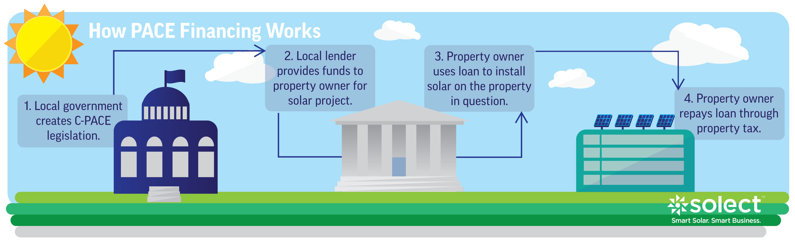
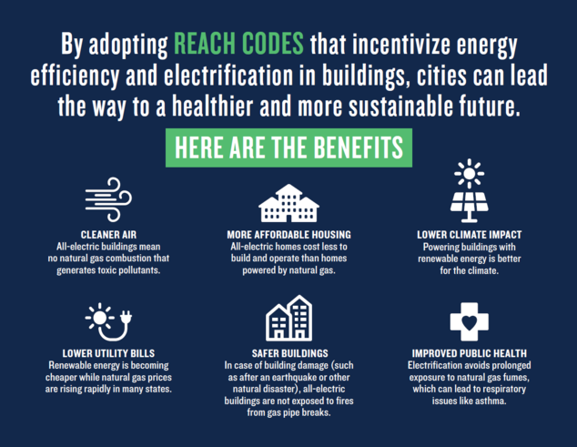
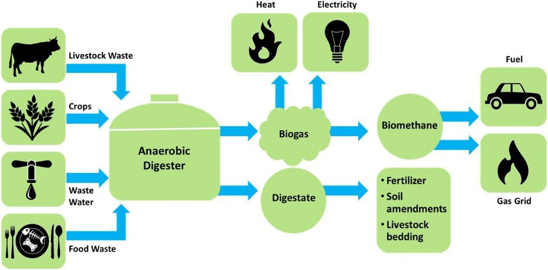

3.2 Building Energy
This domain covers all strategies that reduce the amount of energy use in buildings, which tend to be concentrated in heating or cooling loads but also include lighting and other plug loads. This domain also includes localized power generation and storage, as well as electrification strategies that switch gas use to electricity use where the electricity grid has fewer emissions.
3.2.1 Promote solar development in Opportunity Zones

Source: PV Magazine
| Location | Washington, DC |
|---|---|
| Details | Use the tax benefits in Opportunity Zones to promote lower cost of capital and opportunities. This allows businesses to absorb tax benefits from Opportunity Zones, as well as those from financing solar projects. |
| Links | O-Zones for Clean Energy Opportunity Zones Can Drive Development of U.S. Renewable Energy |
| Implementation Costs & Impact Factor | Nationally, Opportunity Zone credits will cost $1.6 billion in lost tax revenue. 31.5 million people live in Opportunity Zones. |
| Scalable Potential | Opportunity Zones exist within Stockton. |
| Similar | Chart House Energy Opportunity Fund, Muskegon, MI Norfolk Solar Qualified Opportunity Fund |
3.2.2 Promote a Solar Renewable Energy Certificate program

Source: Aurora Solar
| Location | Washington, DC |
|---|---|
| Details | Solar Renewable Energy Certificates (SREC) show that a certain amount of electricity was produced using solar. SRECs can be sold back to utilities so they can meet sustainability requirements that are set by each state. This system is contingent on state-level sustainability requirements. |
| Links | Solar United Neighbors Database of State Incentives for Renewables & Efficiency |
| Implementation Costs & Impact Factor | Depends on the energy market, but SRECs can go for as high as $440 in Washington, DC or as low as $7.50 in Ohio. |
| Scalable Potential | System exists in California. Solar construction can be a great source of high-paying local jobs. |
| Similar | California Solar Initiative Rebates |
3.2.3 Set energy savings standards on all public buildings and provide financial and technical assistance for commercial private sector energy savings

Milwaukee utilizes ENERGY STAR Portfolio Manager to help buildings benchmark their performance and to track participant progress for awards. Source: Better Buildings Challenge Milwaukee
| Location | Milwaukee, WI |
|---|---|
| Details | Using a five-pronged strategy, the City of Milwaukee has: (1) Established efficiency targets (20% reduction over a decade in participating buildings); (2) Offered incentives and financing through leveraging private capital to supply upfront funding for improvements and collects payments through a voluntary municipal special charge; (3) Set a 20% reduction target in government buildings; (4) Provides training to support building owner and occupant actions; and (5) Provided technical services to identify energy efficient equipment and train workforce to support building operations. |
| Links | Better Buildings Challenge |
| Implementation Costs & Impact Factor | Originally a $750,000 grant, the program has since affected 133 buildings, totaling 14,660,008 square feet, and led to $2,418,061 in annual savings. |
| Scalable Potential | See Chapter 4. |
| Similar | San Jose, CA Energy and Water Building Performance Ordinance |
3.2.4 Create a fund to implement energy savings projects

Map of Renew Boston Trust projects. Source: City of Boston
| Location | Boston, MA |
|---|---|
| Details | In 2018, the City of Boston plans to launched Renew Boston Trust, which aims to use a market-based, self-funding model to increase energy efficiency investments and climate resiliency in its commercial and municipal buildings, nonprofit institutions, and multi-family properties. |
| Links | Renew Boston Trust |
| Implementation Costs & Impact Factor | Phase Two involves more than $40 million of energy conservation measures. Results are TBD. |
| Scalable Potential | Stockton’s Department of Public Works could develop a similar initiative. |
| Similar | New York City Energy Efficiency Corporation London Green Fund Sustainable Melbourne Fund The Atmospheric Fund, Toronto |
3.2.5 Enable property-assessed clean energy (PACE) financing

Source: Solect Energy
| Location | Hartford, CT |
|---|---|
| Details | A private company in Hartford operating a mixed-use housing and retail space privately financed a $1 million energy renovation project and paid back the loan through property tax reassessment. Greenworks Lending provided the upfront capital for rooftop solar, fuel cell energy storage, and installation of microgrid. The loan was repaid as a line item assessment of the property tax bill. |
| Links | Better Buildings Initiative |
| Implementation Costs & Impact Factor | $1 million; In Year 1, $316,927 savings |
| Scalable Potential | Stockton has multiple existing PACE programs. |
| Similar | GreenFinanceSF Los Angeles County PACE Set the PACE St. Louis Chicago PACE Arlington C-PACE Milwaukee PACE |
3.2.6 Provide consumer-oriented programs to incentivize energy efficiency retrofits and appliance improvements

Promotional graphics on website. Source: LADWP
| Location | Los Angeles, CA |
|---|---|
| Details | The Los Angeles Department of Water & Power runs multiple energy efficiency programs in three broad categories. Mass market programs generally serve residential customers and encourage them to upgrade to energy efficient appliances, with a few exceptions. Commercial, industrial, and institutional (CII) programs generally serve large nonresidential customers and range in scope from simple lighting upgrades to entire building overhauls. Lastly, cross-cutting programs serve a wide variety of customer types and employ broad strategies for achieving energy savings (e.g., planting street trees, informing updates to building codes, customer outreach, etc.). |
| Links | Economic Benefits of Energy Efficiency Programs: A Case Study of Investments by the Los Angeles Department of Water & Power |
| Implementation Costs & Impact Factor | See table. |
| Scalable Potential | See Chapter 4. |
| Similar | Austin Energy 100 Homes, 100 Days, Birmingham, AL HomeWise, Seattle, WA |
3.2.7 Provide incentives for households to install on-site batteries, particularly for vulnerable customers

Source: Smart Energy
| Location | California |
|---|---|
| Details | Recent increases in wildfires and grid outages has meant that large swathes of California are at greater risk of losing power. As a result, the California Public Utilities Commission has launched the Self-Generation Incentive Program, which provides funding for low-income, medically vulnerable, and other select groups who live in Tier 2 and 3 “High Fire Threat Districts.” |
| Links | Green Tech Media |
| Implementation Costs & Impact Factor | $613 million over four years. As of 2016, 2,178 projects have been completed representing 450 MW of capacity. |
| Scalable Potential | Unlikely given fire zone parameters, but incentives are still possible. |
| Similar | Go Solar California |
3.2.8 Implement “reach” codes which go beyond state minimum requirements for energy use in building design and construction

Source: NRDC
| Location | San Jose, CA |
|---|---|
| Details | San Jose’s reach code aims to make zero-emission electric buildings the default for San Jose. This would include low emission heating, additional charging infrastructure for electric vehicles, and photovoltaic cells on roofs. |
| Links | National Resource Defense Council |
| Implementation Costs & Impact Factor | By [LEED standards]http://www.greenspacebuildings.com/wp-content/uploads/2011/05/Kats-Green-Buildings-Cost.pdf) (See Figure 3 in PDF), the cost is ten times less than the benefits. |
| Scalable Potential | Contingent upon content of codes |
| Similar | Palo Alto, CA |
3.2.9 Use waste to produce electricity

Anaeraboic digestion process. Source: EESI
| Location | Hayward, CA |
|---|---|
| Details | Biogas uses methane and carbon dioxide and converts it into clean gas that can be piped straight into residential facilities for use. The facility involved in the treatment process is powered through the gas and excess electricity from the process is used at other City facilities. |
| Links | City of Hayward |
| Implementation Costs & Impact Factor | Depends on the scale of the project but by one estimate, the cost is about $4,500 per kilowatt generated for plants that generate more than 50 kilowatts. See table. |
| Scalable Potential | Large agricultural industry proximal to Stockton could provide a steady supply of fuel. |
| Similar | Glendale, CA |